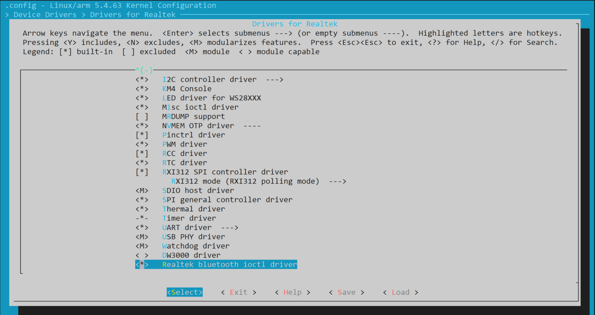
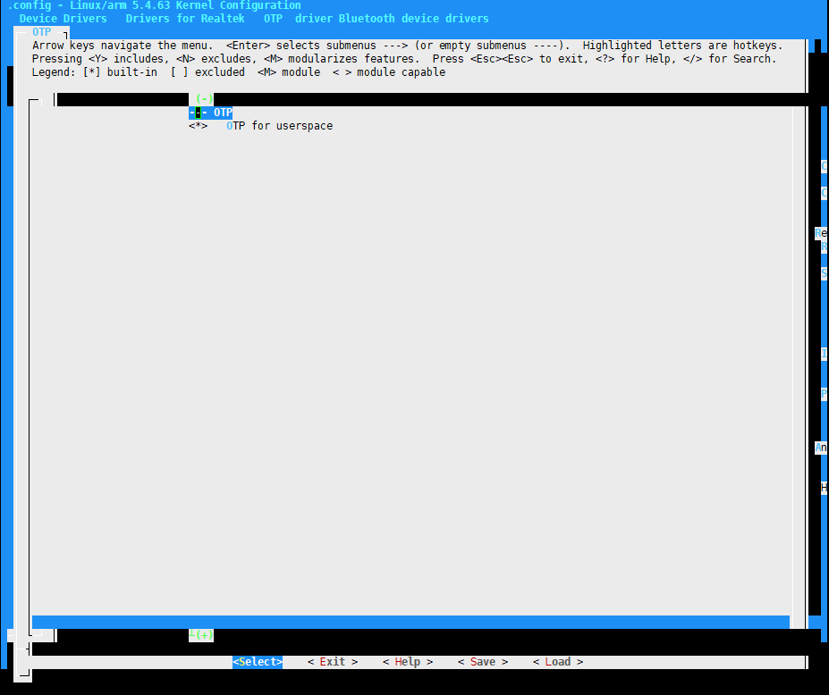
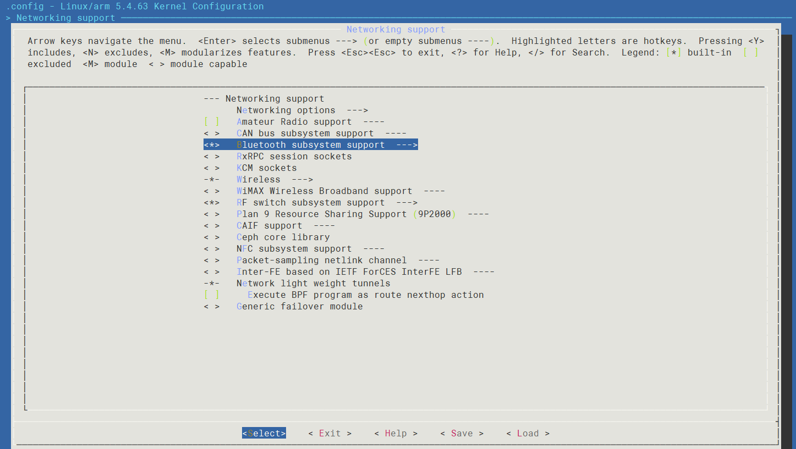
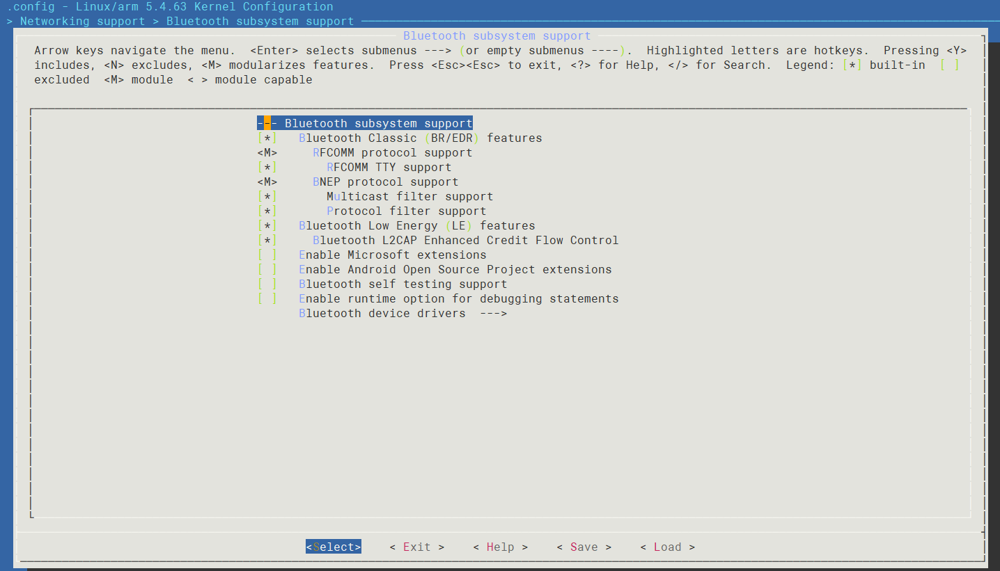
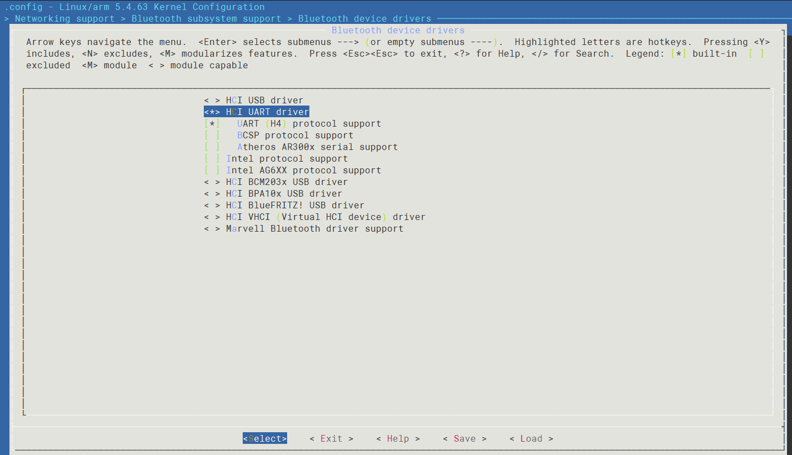
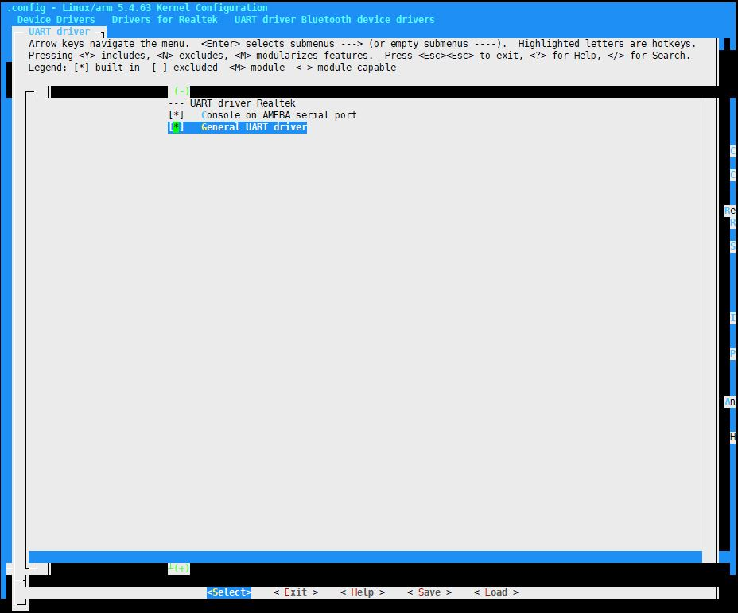

Introduction
Bluetooth controller power-on driver and Bluetooth HCI driver are designed to support Bluetooth module.
Architecture
Bluetooth HCI driver architecture is summarized in the following figure.
{kind=link}
Implementation
Bluetooth Controller Power-on Driver
Realtek’s Bluetooth controller power-on driver is implemented in the following files:
Driver location |
Introduction |
|---|---|
<linux>/drivers/rtkdrivers/bluetooth/realtek-bt.c |
Include Realtek’s Bluetooth controller power-on functions. |
static int rtk_bt_cdev_set_power(struct rtk_bt_power_info *info)
Bluetooth HCI Driver
Original Bluetooth net are supported by Linux Bluetooth subsystem.
Bluetooth HCI UART driver is implemented in the following files:
Driver location |
Introduction |
|---|---|
<linux>/drivers/bluetooth/Kconfig |
Bluetooth HCI driver Kconfig |
<linux>/drivers/bluetooth/Makefile |
Bluetooth HCI driver Makefile |
<linux>/drivers/bluetooth/hci_h4.c |
HCI UART proto funcitons. |
<linux>/drivers/bluetooth/hci_ldisc.c |
HCI UART TTY line discipline functions. |
<linux>/drivers/bluetooth/rtk_coex.c |
HCI UART co-existence handle functions. |
Configuration
DTS Configuration
Bluetooth HCI Driver
UART3 is the special UART for Bluetooth. DTS node are defined in <dts>/rtl8730e-ocp.dtsi.
uart3: serial@41007000 {
compatible = "realtek,ameba-uart";
reg = <0x41007000 0x100>;
clocks = <&rcc RTK_CKE_UART3>;
interrupts = <GIC_SPI 53 IRQ_TYPE_LEVEL_HIGH>;
};
Where:
compatible: ID to match the driver and device, not configurable.
reg: Register resource, not configurable.
clocks: UART clock node, not configurable.
interrupts: SPI interrupt, not configurable.
Build Configuration
Bluetooth Controller Power-on Driver
Select .
{kind=link}

Bluetooth OTP R/W Driver
Select .
{kind=link}

Bluetooth HCI Driver
Select .



{kind=link}
{kind=link}
{kind=link}
Select .

{kind=link}